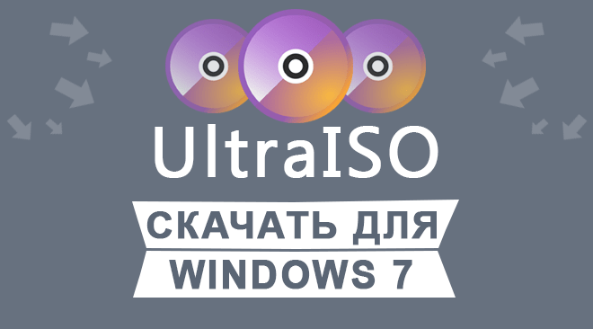
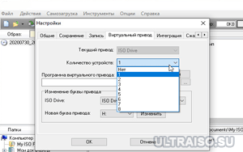

|  | Категория: | Работа с файлами |
| Поддерживаемые ОС: | Windows 7 | |
| Разрядность: | 32 bit, 64 bit, x32, x64 | |
| Для устройств: | Компьютер | |
| Язык интерфейса: | на Русском | |
| Версия: | Последняя | |
| Разработчик: | EZBSystems |
Не будет сложно скачать бесплатно Ультра ИСО для Windows 7 программа на русском старая и архаичная но стоит отметить что до сих пор пользуется популярностью, в освоении не будет проблем, все интуитивно понятно, если нужна загрузочная флешка нужно скорее всего обратится к инструкции так как есть особенности которые простой пользователь может не знать.
|  |  |
 |
{kind=link}
Ультра ИСО для Виндовс 7 на компьютер
Это программа, которая предназначена для работы с форматами образов дисков, различными архивами и CD/DVD-образами. Образ, это копия всего диска, которые автоматически загружаются на ваш компьютер в едином формате iso. Также, есть возможность работать с многотомными файлами и генерировать контрольные суммы. Касаемо функционала, можно еще выделить создание загрузочных флешек. При необходимости, внутри сформированного архива имеется возможность добавлять, удалять и редактировать папки и файлы без их предварительного раскрытия.

Создать образ диска через UltraISO вам не составит особого труда. Установка его несложная и сопровождается рекомендациями на русском языке. Никаких дополнительных программных обеспечений и знаний не требуется – разберется каждый начинающий пользователь. Во время инсталляции вы можете отказаться от тех или иных операций, если вы не видите в них необходимости. Интерфейс довольно прост. Он подобен проводнику Windows, что ускоряет процесс овладения программой. По завершению установки на рабочем столе появится ярлык, который отвечает за запуск.
UltraISO для версий windows:
Скачать UltraISO для windows 7 бесплатно
| Приложение | OS | Распаковщик | Формат | Версия | Загрузка |
|---|---|---|---|---|---|
| UltraISO (Ультра ИСО) | Windows 7 | OpenBox | x32 | Бесплатно (на русском) | |
| UltraISO (Ультра ИСО) | Windows 7 | OpenBox | x64 | Бесплатно (на русском) | |
| UltraISO (Ультра ИСО) | Windows 7 | OpenBox | x32 — x64 | Бесплатно (на русском) | |
Активировать программу можно взяв ключ активации или заменить файл в папке установленной программы. (пароль на архиве 4374) |
|||||
Как установить UltraISO для windows 7:
Запустите файл.

Ознакомьтесь с информацией и нажмите "Далее".
Нажмите "Далее", или снимите галочки с рекомендуемого ПО и нажмите "Далее". Если снять все галочки, рекомендуемое ПО не установится!

После всех шагов нажмите "Установить".

Рабочий экран программы разделен на 4 окна, из которых два верхних отображают то, что находится внутри выбранного диска. В свою очередь нижние выполняют роль поиска и добавления файлов. Копирование и перенос происходит через переброс файлов с одной области экрана в другую (drag-n-drop). С помощью функционала очень легко и быстро можно записать образ диска. Переписывайте музыку, фильмы и игры без затруднений, создавайте виртуальный CD/DVD привод в несколько кликов и редактируйте их содержимое своими руками.
Полезная вещь. Скачаю проверю!
спасибо за рабочий вариант программы
если будут лаги я вернусь и спрошу
Там нету, лагов.
Хорошо, что где-то ещё можно найти версии, совместимые со старыми ОС.
Скачала на свою винду,пока без сбоев
Спасибо за качественный гайд
Удобное в использовании!
всё расписали, прямо-таки для чайников
Сэнкс! Нужная весчь! Сейчас пользуюсь исключительно семеркой, перешел на нее с XP. Восьмерку и десятку органически не перевариваю.
Супер программа ничего не скажешь